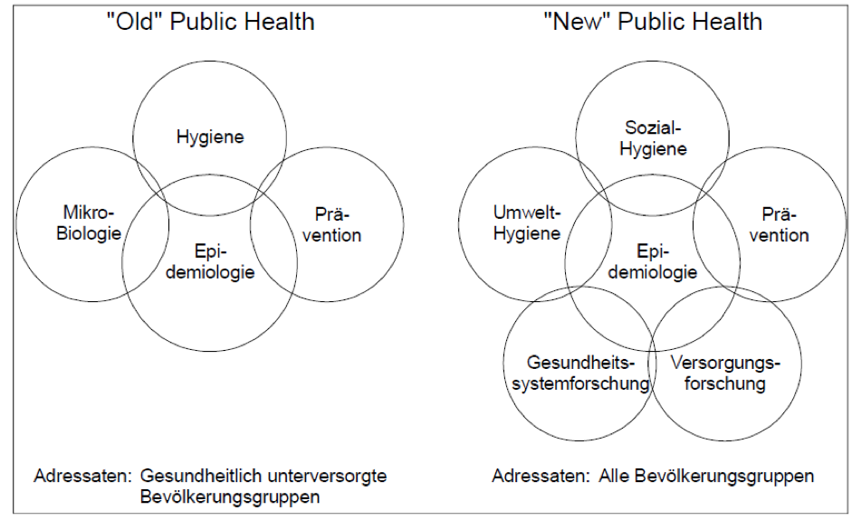

► Inhaltsverzeichnis Kapitel (ausklappbar)
- Gesundheit
- Öffentliche Gesundheit
- Gesundheitswesen (synonym: Gesundheitssystem)
- Öffentliches Gesundheitswesen (Synonym: Öffentliches Gesundheitssystem)
- Öffentlicher Gesundheitsdienst
- Gesundheitsamt
- Gesundheitsschutz
- Volksgesundheit, Bevölkerungsgesundheit
- Bevölkerungsmedizin (Populationsmedizin, Gemeindemedizin, engl. population medicine, community medicine)
- Sozialmedizin (auch Soziale Medizin)
- Sozialhygiene
- Gesundheitswissenschaften
- Public Health - und die Verwendung des Begriffs in Deutschland
- Old & New Public Health
- “Öffentliche Gesundheit” als Gemeingut
- Globale Gesundheit (engl. global health)
In Deutschland werden die Begriffe Öffentliche Gesundheit (engl. Public Health), Bevölkerungsgesundheit, Bevölkerungsmedizin oder Sozialmedizin oft synonym verwendet. Allerdings beinhalten diese zum Teil inhaltliche Differenzierungen und werden unterschiedlich interpretiert. Dies ist einerseits durch die besondere Geschichte Deutschlands, andererseits durch die Verwendung, Bedeutung oder Übersetzung der Begriffe in die deutsche Sprache bedingt.
Um die mit verschiedenen Bedeutungen verbundene Begriffe für die praktische alltägliche Arbeit im ÖGD verständlich zu machen, werden diese im Folgenden beschrieben und interpretiert.
Gesundheit
Die Weltgesundheitsorganisation (WHO) definiert Gesundheit in ihrer Verfassung von 1946 als “ein Zustand des vollkommenen körperlichen, geistigen und sozialen Wohlbefindens und nicht allein das Fehlen von Krankheit oder Gebrechen.” (Health is a state of complete physical, mental and social well-being and not merely the absence of disease or infirmity). (International Health Conference., 1946) Oft wird die hier beschriebene Gesundheit mit Wohlbefinden (engl. well-being) gleichgesetzt.
Bevor sich diese Definition durchsetzte war ein Mensch im Allgemeinen als gesund erachtet worden, wenn diesem äußerlich nichts fehlte.
Öffentliche Gesundheit
Unter öffentlicher Gesundheit wird die Gesundheit aller Menschen in einem Zeitraum in einem festgelegten geographischen Raum, unabhängig von Faktoren wie Staatsbürgerschaft oder Nationalität verstanden. Dabei handelt es sich um die Bestandsaufnahme eines Zustands und weder um eine wissenschaftliche Theorie, noch um gesundheitspolitische Maßnahmen.
Gesundheitswesen (synonym: Gesundheitssystem)
Hierbei handelt es sich um einen übergeordneten Begriff für alle staatlichen, kommunalen und privaten Einrichtungen, Organisationen oder natürlichen Personen, die sich im Sinne der Gesundheit der Menschen einsetzen und sich mit der Aufrechterhaltung der Gesundheit der Bevölkerung, sowie der Prophylaxe, Diagnose und Therapie von Erkrankungen beschäftigen.
An der Gestaltung und Funktion des Gesundheitswesens Beteiligte sind:
-
der Staat mit seiner Gesetzgebung und seinen öffentlichen Körperschaften
-
die Leistungsempfänger (Patientinnen und Patienten)
-
die Leistungserbringer (z.B. Ärzten/innen, Apothekern/innen, Therapeuten/innen und Pflegepersonal u.a.)
-
die Leistungsfinanzierer (Kranken-, Pflege- oder Rentenversicherungen)
-
Interessenverbände, Interessenvertretungen
Öffentliches Gesundheitswesen (Synonym: Öffentliches Gesundheitssystem)
Das Öffentliche Gesundheitswesen umfasst alle Bereiche, Einrichtungen sowie das planmäßiges Handeln der Akteure des Gesundheitswesens, bzw. -systems, die der öffentlichen Hand zuzurechnen sind und der Gesundheit dienen. Insbesondere dazu gezählt werden Krankenhäuser, Sozialversicherungsträger, der Sanitätsdienst der Bundeswehr und der ÖGDt. Das Facharztgebiet Öffentliches Gesundheitswesen umfasst die Beobachtung, Begutachtung und Wahrung der gesundheitlichen Belange der Bevölkerung und der öffentlichen Hygiene, die Gesundheitsaufsicht sowie die Verhütung und Bekämpfung von Krankheiten und die Beratung der Träger öffentlicher Aufgaben in gesundheitlichen Fragen einschließlich Planungs- und Gestaltungsaufgaben zu Gesundheitsförderung, Prävention und der gesundheitlichen Versorgung.
Öffentlicher Gesundheitsdienst
Der Öffentliche Gesundheitsdienst (ÖGD) ist die Organisation von Dienststellen auf der Ebene von Bund, Ländern, Kreisen und Gemeinden, die dem Schutz, der Aufrechterhaltung und der Förderung der Gesundheit der Gemeinschaft und des Einzelnen dienen. Die gesetzlichen Grundlagen, nach denen der ÖGD tätig wird, sind zum Teil bundeseinheitlich geregelt, z.B. das Infektionsschutzgesetz und die Trinkwasserverordnung. Einzelne Aufgabengebiete werden durch länderspezifische Gesetze und Verordnungen unterschiedlich gewichtet.
Der ÖGD ist die Basis des Gesundheitswesens in dem er vorrangig bevölkerungsmedizinisch die gesundheitlichen Vor- und Versorgung der Bevölkerung leistet, auf dem die ambulanten und stationären individualmedizinischen Krankenversorgung aufbaut. Der ÖGD schützt die Bevölkerung vor Gesundheitsgefahren, beugt der Entwicklung von Krankheiten vor und fördert die Gesundheit. Er wird verkörpert durch staatliche Einrichtungen des Bundes, des Landes und der Kommunen und agiert immer auf gesetzlichen Grundlage. Die Aufgabenerfüllung obliegt zu wesentlichen Teilen den kommunalen Gesundheitsämtern als untere Gesundheitsbehörden.
Das Nachwuchsnetzwerk Öffentliche Gesundheit (NÖG) definiert den ÖGD als
“alle Einrichtungen des öffentlichen Dienstes, die auf kommunaler, Landes- und Bundesebene schwerpunktmäßig mit Fragen öffentlicher Gesundheit befasst sind.” (Akçay et al., 2018).
Gesundheitsamt
Das Gesundheitsamt ist die untere Gesundheitsbehörde in der öffentlichen Verwaltung, die als lokaler Teil des ÖGD in der Kommune entsprechende Aufgaben übernimmt.
Neben dem Begriff „Gesundheitsamt“ sind auch andere Bezeichnungen wie „Fachdienst Gesundheit“, „Gesundheitsabteilung“ oder auch „Sachgebiet Gesundheitswesen“ üblich.
In den Gesundheitsdienstgesetzen der Länder, die die rechtliche Grundlage für die Aufgaben und Tätigkeit des ÖGD darstellen, wird zum Teil von unterer Gesundheitsbehörde gesprochen, zumeist wird jedoch der Begriff “Gesundheitsamt” verwendet. Im Folgenden wird hier durchgängig die Bezeichnung Gesundheitsamt benutzt. .
Gesundheitsschutz
Gesundheitsschutz ist die Abwehr von erwartbaren unmittelbaren Gefährdungen der Gesundheit. Üblicherweise werden dazu der Infektionsschutz, gesundheitlicher Katastrophenschutz, umweltbezogener Gesundheitsschutz und Lebensmittel- sowie Trinkwasserschutz gezählt.
Volksgesundheit, Bevölkerungsgesundheit
Die Begriffe Volks- und Bevölkerungsgesundheit sind auf Grund der deutschen Geschichte zum Teil noch negativ besetzt. Aber auch die inhaltliche Zuordnung ist schwierig, da die Begriffe die Zielgruppen des ÖGD nicht vollständig abbilden. Bevölkerung meint üblicherweise den Anteil der Menschen, die in einer bestimmten geografischen Region zu einem bestimmten Zeitpunkt wohnen.
Der ÖGD ist jedoch mit allen Menschen befasst, die sich zu einer bestimmten Zeit in einer bestimmten Region aufhalten (vgl. Öffentliche Gesundheit).
In der epidemiologischen Forschung wird üblicherweise mit wissenschaftlichen Methoden auf die Bevölkerung Bezug genommen.
Bevölkerungsmedizin (Populationsmedizin, Gemeindemedizin, engl. population medicine, community medicine)
Bevölkerungsmedizin ist die Wissenschaft des gesunden und kranken menschlichen Organismus, von den Krankheiten der Bevölkerung und deren Verhütung und Heilung mit dem Ziel der Verbesserung der Gesundheit der Gesamtbevölkerung. Dieses soll durch einen multisektoralen Ansatz zur Bewältigung von Gesundheitsproblemen und zur Verringerung von Disparitäten erzielt werden. Sie umfasst Aspekte der kurativen Medizin, des Gesundheitsschutzes und der Primärprävention, basiert auf medizinischen und gesundheitswissenschaftlichen Qualifikationen und ist ohne kommerzielle Interessen gemeinwohlorientiert. Dabei liegt der Fokus verstärkt auf dem Wohlergehen einer Gesellschaft bei gleichzeitiger Wahrung der Rechte und Integrität von Individuen.
(Zum Begriff “Bevölkerung” siehe Kommentar zu Bevölkerungsgesundheit.)
Sozialmedizin (auch Soziale Medizin)
Bezeichnet die Forschung, Lehre und Praxis zu den Wechselwirkungen von Gesundheit, Krankheit, Individuum und Gesellschaft unter besonderer Berücksichtigung von sozialen Determinanten und Folgen, sowie der Gesundheits- und Sozialversicherungssysteme. (“Deutsche Gesellschaft für Sozialmedizin und Prävention e.V. - Leitbild,” 2006)
Sozialhygiene
Hierbei handelt es sich um einen vor allem historischen Begriff, der die Forschung, Lehre und Praxis der Erhaltung, Förderung und Wiederherstellung der Gesundheit der Menschen als Mitglieder der Gesellschaft umfasst (Winter, 1967).
Die Sozialhygiene war als eigene Fachdisziplin in der zweiten Hälfte des
- Jahrhunderts aus der Verbindung von medizinisch-naturwissenschaftlichen und gesellschaftswissenschaftlichen Erkenntnissen hervorgegangen. Sie dominierte damals das Gebiet öffentlicher Gesundheitsbelange weltweit. (Heinzelmann, 2009)
In der Deutschen Demokratischen Republik wurde Sozialhygiene als übergeordneter Begriff für die Aufgaben des Staates für die Bevölkerungsgesundheit verwendet.
Gesundheitswissenschaften
Als Gesundheitswissenschaften wird u.a. das “Ensemble von wissenschaftlichen Einzeldisziplinen verstanden, die auf einen gemeinsamen Gegenstandsbereich gerichtet sind, nämlich die Analyse von Determinanten und Verläufen von Gesundheits- und Krankheitsprozessen und die Ableitung von bedarfsgerechten Versorgungsstrukturen und deren systematische Evaluation unter Effizienzgesichtspunkten”. Danach liegt im Zentrum des Erkenntnisinteresses der Gesundheitswissenschaften die Verbesserung der Gesundheit der Bevölkerung durch Krankheitsverhütung und Gesundheitsförderung. (Razum & Hurrelmann, 2016)
Zu den wissenschaftlichen Fachdisziplinen, die sich mit natur- und/oder gesellschaftswissenschaftlichen Methoden mit der Beschreibung, Analyse und Verbesserung der öffentlichen Gesundheit im Sinne der Gesundheitswissenschaften auseinandersetzen, werden unter anderem die Gesundheitsökonomie, die Epidemiologie und die Versorgungsforschung gezählt.
Public Health - und die Verwendung des Begriffs in Deutschland
Im anglo-amerikanischen Sprachgebrauch wird der Begriff Public Health als Fachgebiet definiert, das sich mit der Praxis und Wissenschaft der Vermeidung von Krankheiten, Gesundheitsförderung und Verlängerung von Leben durch die organisierten Bemühungen der Gesellschaft beschäftigt.
“Public health is the art and science of preventing disease, promoting health, and prolonging life through organized efforts of society.” (Acheson, 1988)
In Deutschland wird der in den 1980er Jahren aus dem Englischen eingeführte Begriff “Public Health” von unterschiedlichen Akteuren im Gesundheitswesen, und darüber hinaus, oftmals uneinheitlich benutzt und verstanden.
Dieser Begriff wird in Diskussionen zur Begriffsbestimmung von Public Health, weiterhin in eine sogenannte “Old” Public Health und “New” Public Health unterteilt.
Old & New Public Health

aus (Razum & Hurrelmann, 2016)
Aus der Diskussion zur Verwendung des Anglizismus “Public Health” in Deutschland resultierten jahrzehntelang und zum Teil auch aktuell noch fortbestehende Grabenkämpfe der Expertinnen und Experten zum Verständnis und dem Verhältnis von Public Health, Gesundheitswissenschaften, Bevölkerungsgesundheit, Öffentliche Gesundheit, ÖGD, Öffentliches Gesundheitswesen und in den letzten Jahren zunehmend auch zum Thema Global Health.
Heute verwenden vor allem akademische Einrichtungen in Deutschland die Bezeichnung „Public Health“ in Lehre und Forschung. Dass der Begriff von diesen bis heute nicht ins Deutsche übertragen wurde, zeigt, dass akademische Einrichtungen ihr Selbstverständnis eher in der Nähe anglo-amerikanischer “Schools of Public Health”-Vorbildern verorten und nicht im Bezug zu existierenden Einrichtungen des ÖGD. Maschewsky-Schneider hat 2005 aus ihrer Perspektive die Entwicklungen seit den 1980er Jahren in Deutschland wie folgt beschrieben: “Orientiert an Lehr- und Forschungskonzepten der amerikanischen und englischen Schools of Public Health wurde der Begriff „Public Health“ aus dem Englischen übernommen; eine Einigung unter den Wissenschaftlern auf ein deutsches Pendant zu diesem Begriff konnte nicht gefunden werden. Die direkte Übersetzung „Öffentliche Gesundheit“ hätte das Fach zu sehr in Richtung öffentlicher Gesundheitsdienst (ÖGD) gerückt. Von diesem wollte man sich jedoch gerade absetzen.” (Maschewsky-Schneider, 2005)
“Öffentliche Gesundheit” als Gemeingut
Die Auslegung des Begriffes “öffentlich” (engl. public) in “Öffentliche Gesundheit“ (engl. public health) vor allem als die Gesundheit einer Bevölkerung (engl. population) vernachlässigt, dass der Ursprung des Begriffes “ publicus” auch als “öffentlich” oder “dem Volk gehörig” übersetzt werden kann. In der Tat stellt Gesundheit und gesundheitliche Versorgung aller Menschen einer Bevölkerung, genau wie soziale Lebensgrundlagen, öffentlicher Nahverkehr oder das Recht auf Bildung eine öffentliche Angelegenheit (res publica), ein Gemeingut im klassischen Sinne dar. Gemeingüter sind dadurch charakterisiert, dass sie gemeinsam genutzt werden, Missbrauch mit Sanktionen belegt wird und sie staatlich reguliert und überwacht sind.
Aus diesem Grund sind auch in Deutschland das Gemeingut Gesundheit und die gesundheitliche Versorgung der Menschen in einer Gesellschaft zu erhalten und Aufgaben und Einrichtungen im Bereich der Öffentlichen Gesundheit gesetzlich geregelt. So wird das öffentliche Interesse der Gesellschaft an Gesundheit vertreten.
In Deutschland gehören daher insbesondere die kommunalen Gesundheitsämter und Behörden auf Landes- oder Bundesebene zu den Diensten, die Gesundheit im öffentlichen Interesse gewährleisten.
Auch wenn verschiedene, oftmals historische, Gründe zu starken Auseinandersetzungen und Differenzen zwischen den theoretischen und praktischen Bereichen in der Öffentlichen Gesundheit geführt haben, ist es angesichts der aktuellen Herausforderung für die öffentliche Gesundheit dringend erforderlich, weitere Schritte auf dem Weg zu einem gemeinsamen Einsatz für Gesundheitsschutz, Krankheitsvermeidung und Gesundheitsförderung der Bevölkerung auf lokaler, regionaler, nationaler und globaler Ebene zu gehen. (“ÖGD und Public Health: Vom Fremdeln übers gegenseitige Akzeptieren zur Liebesheirat?,” 2005)
Herausforderungen für die Gesundheit auf Bevölkerungsebene wie bspw. Epidemien mit globalem Bedrohungspotential, die steigende Krankheitslast durch nichtübertragbare Erkrankungen (NCDs) inklusive mentaler Gesundheit, vernachlässigte Gesundheitsprobleme wie Unfälle und Verletzungen und globale Transformationen wie der Klimawandel fragen nicht nach Zuständigkeitsabgrenzungen und tradierten Kompetenzbereichen. Exkludierende Ansätze sind daher gerade angesichts aktueller Herausforderungen nicht zielführend. Daher wird zunehmend gefordert, unterschiedliche Ansätze und Interpretationen zu überwinden, die einzelne Fachbereiche ausschließen oder einzelne Disziplinen dominieren lassen. (Hommes, von Philipsborn, Geffert, & Karduck, 2016; von Philipsborn et al., 2018)
Im ÖGD sind bereits adäquate Anerkennung und Würdigung gegenseitiger Fachkompetenz und eine gelebte Interdisziplinarität integraler Bestandteil der praktischen alltäglichen Arbeit. Das spiegelt sich in der breiten, inter- und multidisziplinären Arbeit und Zusammenarbeit innerhalb der Einrichtungen des ÖGD wider.
Weitere Schritte in Richtung einer verstärkten interdisziplinären Zusammenarbeit und Vernetzung wurden insbesondere im Rahmen des Zukunftsforum Public Health und durch das Nachwuchsnetzwerk Öffentliche Gesundheit gemacht.
Auch weisen bereits viele praktische Arbeitsgebiete des ÖGD, wie etwa die medizinische Versorgung von Geflüchteten, mentale Gesundheit und antimikrobielle Resistenzen, heute in Zeiten einer zunehmend globalisierten Welt untrennbar wichtige Aspekte von Öffentlicher Gesundheit mit den Aspekten globaler Gesundheit auf, die bereits lange integriert sind, auch wenn sie möglicherweise nicht immer primär als solche wahrgenommen werden. 2017 wurde auf der Jahrestagung des Berufsverbands der Ärztinnen und Ärzte des Öffentlichen Gesundheitsdienstes (BVÖGD) das Thema “Global Health” als eine mögliche Zukunftsperspektive im Rahmen der Diskussion zum Leitbilds des ÖGD diskutiert. (“Gesundheit für Alle - Programm des Wissenschaftlichen Kongress des BVÖGD,” 2017; Hommes et al., 2016)
Globale Gesundheit (engl. global health)
Globale Gesundheit wird als interdisziplinäres Gebiet beschrieben, das alle Themen umfasst, die Gesundheit von Menschen auf Bevölkerungsebene betreffen, einer globalen Zusammenarbeit bedürfen und bei denen gesundheitliche Chancengleichheit und soziale Gerechtigkeit eine große Rolle spielen. (Koplan et al., 2009)
Themen und Herausforderungen globaler Gesundheit sind auf globaler, nationaler, regionaler und lokaler Ebene relevant für die Gesundheit auf bevölkerungs- und individualmedizinischer Ebene. Dabei beschränkt sich globale Gesundheit weder auf sozial-, noch biomedizinische Aspekte, sondern integriert diese in einem interdisziplinären Ansatz.
#